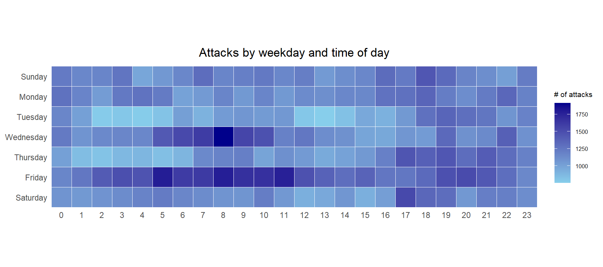
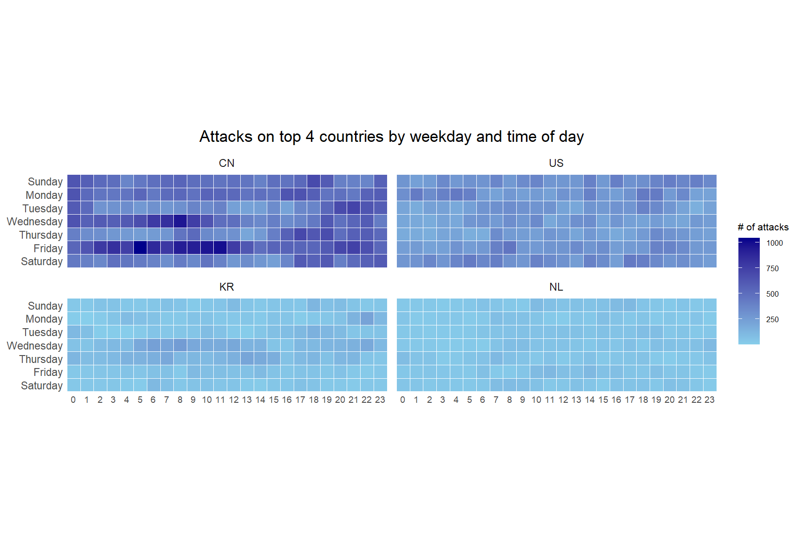
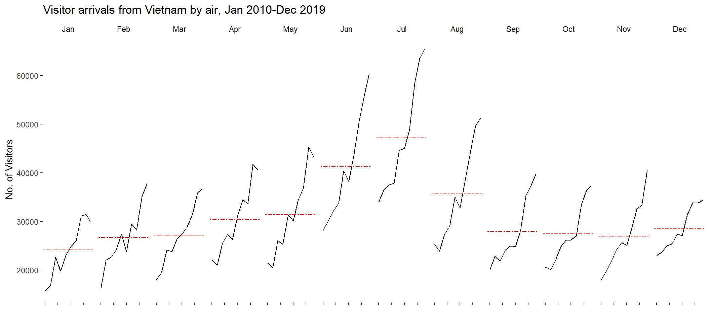
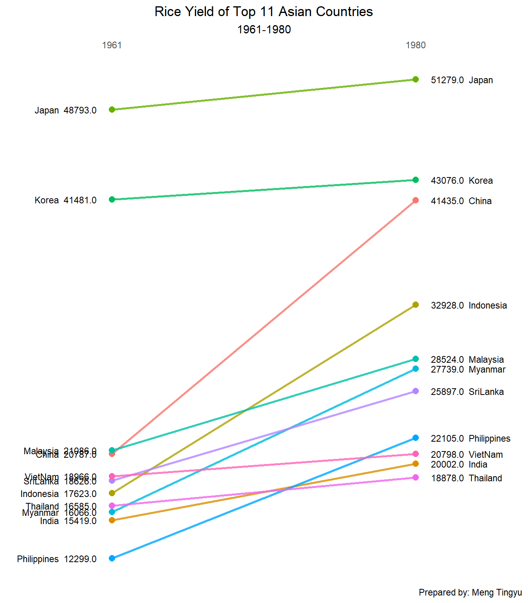

Show the code
pacman::p_load(scales, viridis, lubridate, ggthemes,
gridExtra, readxl, knitr, data.table,
tidyverse)Meng Tingyu
June 10, 2026
June 10, 2026
Time-oriented data is everywhere in the kind of problems this course keeps coming back to: server logs, visitor arrivals, crop yields, sales records. The hard part is that a plain line chart often hides as much as it shows once the series gets long or once I want to compare many series at once. In this exercise I practise three families of techniques that each attack a different weakness of the line chart:
My goal here is not just to reproduce the plots but to understand which question each chart form is actually good at answering.
I load every package this exercise relies on in a single pacman::p_load() call. This is my standard loader because it installs anything missing and then attaches everything in one line, which keeps the setup chunk tidy.
A quick note on what each one does in this exercise: lubridate and base R give me the date and time parsing, data.table speeds up the row-wise field derivation, ggthemes supplies the clean theme_tufte() look, and scales formats the percentage labels. tidyverse is doing the heavy lifting throughout for wrangling and plotting, including the slopegraph near the end, which I build with ggplot2 directly.
The brief draws its slopegraph with newggslopegraph() from CGPfunctions. That package was archived from CRAN in November 2025, and its GitHub version depends on ggmosaic, which is also unavailable for R 4.5, so neither a CRAN nor a GitHub install succeeds on a current setup. Rather than fight that dependency chain, I build the slopegraph from base ggplot2 later on. It is a little more code, but it removes a fragile dependency entirely.
The first technique takes a raw event log and turns it into a weekday by hour grid. Each cell is shaded by how many events fell into that weekday and hour combination, so a single image can reveal whether the activity follows office hours, weekends, or some other rhythm.
I use eventlog.csv, which holds 199,999 rows of time-series cyber attack records keyed by country. It is a good fit because the volume is large enough that the temporal pattern is genuinely hard to see in a table, which is exactly the situation a heatmap is built for.
Before I touch the data I always look at the first few rows, because the shape of the raw fields decides how I derive everything downstream.
| timestamp | source_country | tz |
|---|---|---|
| 2015-03-12 15:59:16 | CN | Asia/Shanghai |
| 2015-03-12 16:00:48 | FR | Europe/Paris |
| 2015-03-12 16:02:26 | CN | Asia/Shanghai |
| 2015-03-12 16:02:38 | US | America/Chicago |
| 2015-03-12 16:03:22 | CN | Asia/Shanghai |
| 2015-03-12 16:03:45 | CN | Asia/Shanghai |
The frame has three columns. timestamp stores the date-time in POSIXct form, source_country is the ISO 3166-1 alpha-2 country code of the attack source, and tz is the time zone of the source IP address. The tz column is the detail that matters most, because the same instant in UTC means a different local weekday and hour depending on where the attacker sits, and the whole point of this chart is to read activity by local time of day.
To plot a weekday by hour grid I first need a wkday field and an hour field. The tricky requirement is that both must be computed in the source’s own time zone, not mine. I wrap that logic in a small function so it can be applied one time-zone group at a time.
Here ymd_hms() parses the timestamp into the time zone passed in, and hour() extracts the hour. For the weekday I deliberately avoid base R’s weekdays(). Instead I take the numeric weekday from wday(), where 1 is Sunday through 7 is Saturday, and index into a fixed English vector. I take tz[1] because the function receives one time zone per call, so every element of that vector is identical and I only need the first.
weekdays(): a locale trap
The brief uses weekdays(real_times), which returns the day name in the system locale. On an English machine that gives “Monday”, “Tuesday”, and so on, exactly what wkday_levels expects. My Windows install runs in a non-English locale, so weekdays() hands back localised day names instead. None of those match the English entries in wkday_levels, so factor() turns every weekday into NA, na.omit() then drops every single row, and the faceted heatmap fails with “Faceting variables must have at least one value”. Deriving the weekday from the numeric wday() and mapping to fixed English names sidesteps the locale completely, so the same code behaves identically on any machine.
ymd_hms() only accepts one time zone per call. Since the data spans many zones, I cannot convert the whole column in one shot. The clean fix is to split the data by tz and run this function within each group, which is what the next step does.
I set the weekday order myself so that the finished plot reads from Sunday at the bottom to Saturday at the top, then I apply the function group by group and lock both new fields into ordered factors.
| tz | source_country | wkday | hour |
|---|---|---|---|
| Africa/Cairo | BG | Saturday | 20 |
| Africa/Cairo | TW | Sunday | 6 |
| Africa/Cairo | TW | Sunday | 8 |
| Africa/Cairo | CN | Sunday | 11 |
| Africa/Cairo | US | Sunday | 15 |
| Africa/Cairo | CA | Monday | 11 |
ggplot2 orders a discrete axis by factor levels, not by alphabet. By forcing wkday and hour into factors with explicit levels, I decide the row order and make sure all 24 hours appear even if some are empty. If I skipped this step the y-axis would come out in alphabetical day order, which would scramble the visual.
Now I aggregate to one count per weekday and hour, drop any missing combinations, and draw the grid.
grouped <- attacks %>%
count(wkday, hour) %>%
ungroup() %>%
na.omit()
ggplot(grouped,
aes(hour,
wkday,
fill = n)) +
geom_tile(color = "white",
linewidth = 0.1) +
theme_tufte(base_family = "Helvetica") +
coord_equal() +
scale_fill_gradient(name = "# of attacks",
low = "sky blue",
high = "dark blue") +
labs(x = NULL,
y = NULL,
title = "Attacks by weekday and time of day") +
theme(axis.ticks = element_blank(),
plot.title = element_text(hjust = 0.5),
legend.title = element_text(size = 8),
legend.text = element_text(size = 6))
Walking through the choices I made: count() builds the n field that maps to fill, na.omit() removes rows where the time zone could not be parsed, and geom_tile() draws one rectangle per cell with a thin white border so the grid stays readable. theme_tufte() removes the chart junk that would otherwise compete with the colour signal, and coord_equal() keeps the cells square so no row or column looks artificially heavier. scale_fill_gradient() runs from light to dark blue so that darker simply means more attacks.
The course code uses size = 0.1 inside geom_tile(). From ggplot2 3.4.0 onward the border thickness argument for tiles and lines was renamed to linewidth, and size now throws a deprecation warning. I switched to linewidth = 0.1 so the chunk runs cleanly on a current install. The visual is identical.
A single grid mixes every country together. To compare patterns across the heaviest sources I rebuild the same chart faceted by country, focusing on the top four.
I count attacks per country, convert each count into a share of the total with percent(), and sort so the busiest countries sit at the top. The arrange() is what lets me grab the leaders by position in the next step.
I pull the four leading codes, keep only their records, and recompute the weekday-hour counts within each country. Setting source_country as a factor with levels = top4 means the four panels appear in descending order of attack volume rather than alphabetical order, which makes the facets easier to compare.
ggplot(top4_attacks,
aes(hour,
wkday,
fill = n)) +
geom_tile(color = "white",
linewidth = 0.1) +
theme_tufte(base_family = "Helvetica") +
coord_equal() +
scale_fill_gradient(name = "# of attacks",
low = "sky blue",
high = "dark blue") +
facet_wrap(~source_country, ncol = 2) +
labs(x = NULL, y = NULL,
title = "Attacks on top 4 countries by weekday and time of day") +
theme(axis.ticks = element_blank(),
axis.text.x = element_text(size = 7),
plot.title = element_text(hjust = 0.5),
legend.title = element_text(size = 8),
legend.text = element_text(size = 6))
The only structural change from the single heatmap is facet_wrap(~source_country, ncol = 2), which repeats the grid once per country on a shared colour scale. The shared scale is important: because every panel reads against the same legend, I can compare absolute intensity across countries and not just the shape within each one.
This chart form is at its best when I want to spot a rhythm in a high-volume log and I do not need exact numbers. The faceted version trades a little resolution for a direct visual comparison across groups. The whole exercise also reminded me that the local time zone, not UTC, is what makes the time-of-day pattern meaningful.
A cycle plot answers a different question. Instead of asking when activity happens within a day, it separates the seasonal shape from the long-run trend. It does this by grouping the series by month and drawing the year-over-year line inside each month panel, with a reference line for that month’s average.
I use arrivals_by_air.xlsx, read in with read_excel() from the readxl package.
I extract the calendar month as an ordered factor labelled by its three-letter abbreviation, and I extract the year as a plain integer. The month must be an ordered factor so the panels run January to December rather than alphabetically.
I keep only Vietnam’s arrivals plus the month and year keys, and I restrict to 2010 onward so the cycle plot covers a clean recent decade.
This small summary holds one average per month. It becomes the reference line in each panel, which is the device that lets me read whether a given month sits above or below its own typical level.
ggplot() +
geom_line(data = Vietnam,
aes(x = year,
y = `Vietnam`,
group = month),
colour = "black") +
geom_hline(aes(yintercept = avgvalue),
data = hline.data,
linetype = 6,
colour = "red",
linewidth = 0.5) +
facet_grid(~month) +
labs(title = "Visitor arrivals from Vietnam by air, Jan 2010-Dec 2019") +
xlab("") +
ylab("No. of Visitors") +
theme_tufte(base_family = "Helvetica") +
theme(axis.text.x = element_blank())
The construction is two layers over a faceted canvas. The black geom_line() draws the trend across years within each month, grouped by month so the lines do not jump across panels. The red dashed geom_hline() pulls the per-month average from hline.data, giving each panel its own benchmark. facet_grid(~month) lays the twelve panels side by side so the eye sweeps across the seasonal shape from left to right while still seeing each month’s year-on-year movement.
The reference code put axis.text.x = element_blank() inside labs(). That argument is meaningless to labs(), so it silently does nothing and the year ticks stay on screen, which clutters twelve narrow panels. The correct home for it is theme(), so I moved it there. I also updated the geom_hline() thickness from size to linewidth for the same deprecation reason as before.
Reading this chart, the within-panel slope tells me the trend and the height of each panel relative to its red line tells me the seasonality. That separation is the whole value of the form. A single line chart of the same data would blend the two effects together and force me to guess which is which.
A slopegraph is the most minimal of the three. It compares two points in time and represents each entity as a single line, so the only thing the reader processes is the direction and steepness of that line. It is ideal for ranking change between two snapshots.
newggslopegraph() would normally do this in one call, but since I am avoiding that package I assemble the same Tufte-style slopegraph from ggplot2 layers. I keep the two endpoint years, turn Year into a two-level factor so it becomes two discrete columns, and draw one line per country with its name and value labelled on each side.
rice_slope <- rice %>%
filter(Year %in% c(1961, 1980)) %>%
mutate(Year = factor(Year, levels = c("1961", "1980")))
ggplot(rice_slope, aes(x = Year, y = Yield, group = Country)) +
geom_line(aes(colour = Country), linewidth = 1, alpha = 0.8) +
geom_point(aes(colour = Country), size = 2.5) +
geom_text(data = filter(rice_slope, Year == "1961"),
aes(label = sprintf("%s %.1f", Country, Yield)),
hjust = 1, nudge_x = -0.05, size = 3) +
geom_text(data = filter(rice_slope, Year == "1980"),
aes(label = sprintf("%.1f %s", Yield, Country)),
hjust = 0, nudge_x = 0.05, size = 3) +
scale_x_discrete(position = "top",
expand = expansion(mult = 0.35)) +
guides(colour = "none") +
labs(title = "Rice Yield of Top 11 Asian Countries",
subtitle = "1961-1980",
x = NULL, y = NULL,
caption = "Prepared by: Meng Tingyu") +
theme_minimal() +
theme(panel.grid = element_blank(),
axis.text.y = element_blank(),
axis.ticks = element_blank(),
plot.title = element_text(hjust = 0.5),
plot.subtitle = element_text(hjust = 0.5))
The structure is straightforward once the year is a factor. geom_line() and geom_point() draw the slope for each country, the two geom_text() layers place the country and its yield on the left and right edges, and scale_x_discrete(position = "top") with a wide expand keeps the year labels at the top while leaving room for the side text. Hiding the colour legend, the y-axis, and the gridlines is what gives the chart its minimal Tufte feel.
A slopegraph needs exactly two discrete columns. Leaving Year numeric would place the points on a continuous scale, and the spacing would no longer read as two clean snapshots. Forcing it to a factor with two levels is what gives the chart its two-column structure, the same factor-as-layout idea that fixed the heatmap axis order.
The strength here is also the limitation. By showing only two time points the chart makes the ranking and the change instantly legible, but it throws away everything that happened in between. I would reach for this when the before-and-after comparison is the entire story, and reach for a cycle plot or line chart when the path matters.
Putting the three techniques next to each other, the lesson I am taking away is that each one wins by deliberately discarding something. The calendar heatmap gives up precise values to handle a high-volume log. The cycle plot gives up a single continuous timeline to separate season from trend. The slopegraph gives up everything between two dates to make a ranking change unmissable. Choosing the right chart is really about deciding which part of the temporal structure I am willing to suppress so that the part I care about can stand out.
---
title: "Hands-on Exercise 7: Visualising and Analysing Time-oriented Data"
author: "Meng Tingyu"
date: "June 10, 2026"
date-modified: "last-modified"
format:
html:
toc: true
number-sections: true
code-fold: true
code-summary: "Show the code"
code-tools: true
execute:
echo: true
eval: true
warning: false
message: false
freeze: true
---
# Overview
Time-oriented data is everywhere in the kind of problems this course keeps coming back to: server logs, visitor arrivals, crop yields, sales records. The hard part is that a plain line chart often hides as much as it shows once the series gets long or once I want to compare many series at once. In this exercise I practise three families of techniques that each attack a different weakness of the line chart:
- a **calendar heatmap**, which lays out a long event log on a weekday by hour grid so that daily and weekly rhythms jump out,
- a **cycle plot**, which separates the within-year seasonal shape from the long-run trend, and
- a **slopegraph**, which strips a before-and-after comparison down to the slope of each line.
My goal here is not just to reproduce the plots but to understand which question each chart form is actually good at answering.
## Getting started
I load every package this exercise relies on in a single `pacman::p_load()` call. This is my standard loader because it installs anything missing and then attaches everything in one line, which keeps the setup chunk tidy.
```{r}
pacman::p_load(scales, viridis, lubridate, ggthemes,
gridExtra, readxl, knitr, data.table,
tidyverse)
```
A quick note on what each one does in this exercise: `lubridate` and base R give me the date and time parsing, `data.table` speeds up the row-wise field derivation, `ggthemes` supplies the clean `theme_tufte()` look, and `scales` formats the percentage labels. `tidyverse` is doing the heavy lifting throughout for wrangling and plotting, including the slopegraph near the end, which I build with `ggplot2` directly.
::: {.callout-note}
## A note on the slopegraph package
The brief draws its slopegraph with `newggslopegraph()` from `CGPfunctions`. That package was archived from CRAN in November 2025, and its GitHub version depends on `ggmosaic`, which is also unavailable for R 4.5, so neither a CRAN nor a GitHub install succeeds on a current setup. Rather than fight that dependency chain, I build the slopegraph from base `ggplot2` later on. It is a little more code, but it removes a fragile dependency entirely.
:::
# Plotting a Calendar Heatmap
The first technique takes a raw event log and turns it into a weekday by hour grid. Each cell is shaded by how many events fell into that weekday and hour combination, so a single image can reveal whether the activity follows office hours, weekends, or some other rhythm.
## The data
I use `eventlog.csv`, which holds 199,999 rows of time-series cyber attack records keyed by country. It is a good fit because the volume is large enough that the temporal pattern is genuinely hard to see in a table, which is exactly the situation a heatmap is built for.
## Importing the data
```{r}
attacks <- read_csv("data/eventlog.csv")
```
## Examining the data structure
Before I touch the data I always look at the first few rows, because the shape of the raw fields decides how I derive everything downstream.
```{r}
kable(head(attacks))
```
The frame has three columns. `timestamp` stores the date-time in POSIXct form, `source_country` is the ISO 3166-1 alpha-2 country code of the attack source, and `tz` is the time zone of the source IP address. The `tz` column is the detail that matters most, because the same instant in UTC means a different local weekday and hour depending on where the attacker sits, and the whole point of this chart is to read activity by local time of day.
## Data preparation
### Deriving the weekday and hour fields
To plot a weekday by hour grid I first need a `wkday` field and an `hour` field. The tricky requirement is that both must be computed in the source's own time zone, not mine. I wrap that logic in a small function so it can be applied one time-zone group at a time.
```{r}
make_hr_wkday <- function(ts, sc, tz) {
real_times <- ymd_hms(ts,
tz = tz[1],
quiet = TRUE)
wkday_en <- c("Sunday", "Monday", "Tuesday", "Wednesday",
"Thursday", "Friday", "Saturday")
dt <- data.table(source_country = sc,
wkday = wkday_en[wday(real_times)],
hour = hour(real_times))
return(dt)
}
```
Here `ymd_hms()` parses the timestamp into the time zone passed in, and `hour()` extracts the hour. For the weekday I deliberately avoid base R's `weekdays()`. Instead I take the numeric weekday from `wday()`, where 1 is Sunday through 7 is Saturday, and index into a fixed English vector. I take `tz[1]` because the function receives one time zone per call, so every element of that vector is identical and I only need the first.
::: {.callout-warning}
## Why not `weekdays()`: a locale trap
The brief uses `weekdays(real_times)`, which returns the day name in the system locale. On an English machine that gives "Monday", "Tuesday", and so on, exactly what `wkday_levels` expects. My Windows install runs in a non-English locale, so `weekdays()` hands back localised day names instead. None of those match the English entries in `wkday_levels`, so `factor()` turns every weekday into `NA`, `na.omit()` then drops every single row, and the faceted heatmap fails with "Faceting variables must have at least one value". Deriving the weekday from the numeric `wday()` and mapping to fixed English names sidesteps the locale completely, so the same code behaves identically on any machine.
:::
::: {.callout-note}
## Why a custom function at all
`ymd_hms()` only accepts one time zone per call. Since the data spans many zones, I cannot convert the whole column in one shot. The clean fix is to split the data by `tz` and run this function within each group, which is what the next step does.
:::
### Building the attacks tibble
I set the weekday order myself so that the finished plot reads from Sunday at the bottom to Saturday at the top, then I apply the function group by group and lock both new fields into ordered factors.
```{r}
wkday_levels <- c('Saturday', 'Friday',
'Thursday', 'Wednesday',
'Tuesday', 'Monday',
'Sunday')
attacks <- attacks %>%
group_by(tz) %>%
do(make_hr_wkday(.$timestamp,
.$source_country,
.$tz)) %>%
ungroup() %>%
mutate(wkday = factor(
wkday, levels = wkday_levels),
hour = factor(
hour, levels = 0:23))
```
```{r}
kable(head(attacks))
```
::: {.callout-tip}
## Factors are doing the layout work
`ggplot2` orders a discrete axis by factor levels, not by alphabet. By forcing `wkday` and `hour` into factors with explicit levels, I decide the row order and make sure all 24 hours appear even if some are empty. If I skipped this step the y-axis would come out in alphabetical day order, which would scramble the visual.
:::
## Building the calendar heatmap
Now I aggregate to one count per weekday and hour, drop any missing combinations, and draw the grid.
```{r}
#| fig-width: 9
#| fig-height: 4
grouped <- attacks %>%
count(wkday, hour) %>%
ungroup() %>%
na.omit()
ggplot(grouped,
aes(hour,
wkday,
fill = n)) +
geom_tile(color = "white",
linewidth = 0.1) +
theme_tufte(base_family = "Helvetica") +
coord_equal() +
scale_fill_gradient(name = "# of attacks",
low = "sky blue",
high = "dark blue") +
labs(x = NULL,
y = NULL,
title = "Attacks by weekday and time of day") +
theme(axis.ticks = element_blank(),
plot.title = element_text(hjust = 0.5),
legend.title = element_text(size = 8),
legend.text = element_text(size = 6))
```
Walking through the choices I made: `count()` builds the `n` field that maps to fill, `na.omit()` removes rows where the time zone could not be parsed, and `geom_tile()` draws one rectangle per cell with a thin white border so the grid stays readable. `theme_tufte()` removes the chart junk that would otherwise compete with the colour signal, and `coord_equal()` keeps the cells square so no row or column looks artificially heavier. `scale_fill_gradient()` runs from light to dark blue so that darker simply means more attacks.
::: {.callout-warning}
## A version gotcha I hit
The course code uses `size = 0.1` inside `geom_tile()`. From ggplot2 3.4.0 onward the border thickness argument for tiles and lines was renamed to `linewidth`, and `size` now throws a deprecation warning. I switched to `linewidth = 0.1` so the chunk runs cleanly on a current install. The visual is identical.
:::
## Building multiple calendar heatmaps
A single grid mixes every country together. To compare patterns across the heaviest sources I rebuild the same chart faceted by country, focusing on the top four.
### Deriving the attacks-by-country object
```{r}
attacks_by_country <- count(
attacks, source_country) %>%
mutate(percent = percent(n/sum(n))) %>%
arrange(desc(n))
```
I count attacks per country, convert each count into a share of the total with `percent()`, and sort so the busiest countries sit at the top. The `arrange()` is what lets me grab the leaders by position in the next step.
### Preparing the tidy data frame
```{r}
top4 <- attacks_by_country$source_country[1:4]
top4_attacks <- attacks %>%
filter(source_country %in% top4) %>%
count(source_country, wkday, hour) %>%
ungroup() %>%
mutate(source_country = factor(
source_country, levels = top4)) %>%
na.omit()
```
I pull the four leading codes, keep only their records, and recompute the weekday-hour counts within each country. Setting `source_country` as a factor with `levels = top4` means the four panels appear in descending order of attack volume rather than alphabetical order, which makes the facets easier to compare.
### Plotting the multiple calendar heatmaps
```{r}
#| fig-width: 9
#| fig-height: 6
ggplot(top4_attacks,
aes(hour,
wkday,
fill = n)) +
geom_tile(color = "white",
linewidth = 0.1) +
theme_tufte(base_family = "Helvetica") +
coord_equal() +
scale_fill_gradient(name = "# of attacks",
low = "sky blue",
high = "dark blue") +
facet_wrap(~source_country, ncol = 2) +
labs(x = NULL, y = NULL,
title = "Attacks on top 4 countries by weekday and time of day") +
theme(axis.ticks = element_blank(),
axis.text.x = element_text(size = 7),
plot.title = element_text(hjust = 0.5),
legend.title = element_text(size = 8),
legend.text = element_text(size = 6))
```
The only structural change from the single heatmap is `facet_wrap(~source_country, ncol = 2)`, which repeats the grid once per country on a shared colour scale. The shared scale is important: because every panel reads against the same legend, I can compare absolute intensity across countries and not just the shape within each one.
::: {.callout-note}
## My takeaway on calendar heatmaps
This chart form is at its best when I want to spot a rhythm in a high-volume log and I do not need exact numbers. The faceted version trades a little resolution for a direct visual comparison across groups. The whole exercise also reminded me that the local time zone, not UTC, is what makes the time-of-day pattern meaningful.
:::
# Plotting a Cycle Plot
A cycle plot answers a different question. Instead of asking when activity happens within a day, it separates the seasonal shape from the long-run trend. It does this by grouping the series by month and drawing the year-over-year line inside each month panel, with a reference line for that month's average.
## Data import
I use `arrivals_by_air.xlsx`, read in with `read_excel()` from the readxl package.
```{r}
air <- read_excel("data/arrivals_by_air.xlsx")
```
## Deriving month and year fields
```{r}
air$month <- factor(month(air$`Month-Year`),
levels = 1:12,
labels = month.abb,
ordered = TRUE)
air$year <- year(ymd(air$`Month-Year`))
```
I extract the calendar month as an ordered factor labelled by its three-letter abbreviation, and I extract the year as a plain integer. The month must be an ordered factor so the panels run January to December rather than alphabetically.
## Extracting the target country
```{r}
Vietnam <- air %>%
select(`Vietnam`,
month,
year) %>%
filter(year >= 2010)
```
I keep only Vietnam's arrivals plus the month and year keys, and I restrict to 2010 onward so the cycle plot covers a clean recent decade.
## Computing the year-average arrivals by month
```{r}
hline.data <- Vietnam %>%
group_by(month) %>%
summarise(avgvalue = mean(`Vietnam`))
```
This small summary holds one average per month. It becomes the reference line in each panel, which is the device that lets me read whether a given month sits above or below its own typical level.
## Plotting the cycle plot
```{r}
#| fig-width: 11
#| fig-height: 5
ggplot() +
geom_line(data = Vietnam,
aes(x = year,
y = `Vietnam`,
group = month),
colour = "black") +
geom_hline(aes(yintercept = avgvalue),
data = hline.data,
linetype = 6,
colour = "red",
linewidth = 0.5) +
facet_grid(~month) +
labs(title = "Visitor arrivals from Vietnam by air, Jan 2010-Dec 2019") +
xlab("") +
ylab("No. of Visitors") +
theme_tufte(base_family = "Helvetica") +
theme(axis.text.x = element_blank())
```
The construction is two layers over a faceted canvas. The black `geom_line()` draws the trend across years within each month, grouped by month so the lines do not jump across panels. The red dashed `geom_hline()` pulls the per-month average from `hline.data`, giving each panel its own benchmark. `facet_grid(~month)` lays the twelve panels side by side so the eye sweeps across the seasonal shape from left to right while still seeing each month's year-on-year movement.
::: {.callout-warning}
## A subtle bug I corrected
The reference code put `axis.text.x = element_blank()` inside `labs()`. That argument is meaningless to `labs()`, so it silently does nothing and the year ticks stay on screen, which clutters twelve narrow panels. The correct home for it is `theme()`, so I moved it there. I also updated the `geom_hline()` thickness from `size` to `linewidth` for the same deprecation reason as before.
:::
::: {.callout-note}
## My takeaway on cycle plots
Reading this chart, the within-panel slope tells me the trend and the height of each panel relative to its red line tells me the seasonality. That separation is the whole value of the form. A single line chart of the same data would blend the two effects together and force me to guess which is which.
:::
# Plotting a Slopegraph
A slopegraph is the most minimal of the three. It compares two points in time and represents each entity as a single line, so the only thing the reader processes is the direction and steepness of that line. It is ideal for ranking change between two snapshots.
## Data import
```{r}
rice <- read_csv("data/rice.csv")
```
## Plotting the slopegraph
`newggslopegraph()` would normally do this in one call, but since I am avoiding that package I assemble the same Tufte-style slopegraph from `ggplot2` layers. I keep the two endpoint years, turn `Year` into a two-level factor so it becomes two discrete columns, and draw one line per country with its name and value labelled on each side.
```{r}
#| fig-width: 7
#| fig-height: 8
rice_slope <- rice %>%
filter(Year %in% c(1961, 1980)) %>%
mutate(Year = factor(Year, levels = c("1961", "1980")))
ggplot(rice_slope, aes(x = Year, y = Yield, group = Country)) +
geom_line(aes(colour = Country), linewidth = 1, alpha = 0.8) +
geom_point(aes(colour = Country), size = 2.5) +
geom_text(data = filter(rice_slope, Year == "1961"),
aes(label = sprintf("%s %.1f", Country, Yield)),
hjust = 1, nudge_x = -0.05, size = 3) +
geom_text(data = filter(rice_slope, Year == "1980"),
aes(label = sprintf("%.1f %s", Yield, Country)),
hjust = 0, nudge_x = 0.05, size = 3) +
scale_x_discrete(position = "top",
expand = expansion(mult = 0.35)) +
guides(colour = "none") +
labs(title = "Rice Yield of Top 11 Asian Countries",
subtitle = "1961-1980",
x = NULL, y = NULL,
caption = "Prepared by: Meng Tingyu") +
theme_minimal() +
theme(panel.grid = element_blank(),
axis.text.y = element_blank(),
axis.ticks = element_blank(),
plot.title = element_text(hjust = 0.5),
plot.subtitle = element_text(hjust = 0.5))
```
The structure is straightforward once the year is a factor. `geom_line()` and `geom_point()` draw the slope for each country, the two `geom_text()` layers place the country and its yield on the left and right edges, and `scale_x_discrete(position = "top")` with a wide `expand` keeps the year labels at the top while leaving room for the side text. Hiding the colour legend, the y-axis, and the gridlines is what gives the chart its minimal Tufte feel.
::: {.callout-tip}
## Why factor the year
A slopegraph needs exactly two discrete columns. Leaving `Year` numeric would place the points on a continuous scale, and the spacing would no longer read as two clean snapshots. Forcing it to a factor with two levels is what gives the chart its two-column structure, the same factor-as-layout idea that fixed the heatmap axis order.
:::
::: {.callout-note}
## My takeaway on slopegraphs
The strength here is also the limitation. By showing only two time points the chart makes the ranking and the change instantly legible, but it throws away everything that happened in between. I would reach for this when the before-and-after comparison is the entire story, and reach for a cycle plot or line chart when the path matters.
:::
# Reflection
Putting the three techniques next to each other, the lesson I am taking away is that each one wins by deliberately discarding something. The calendar heatmap gives up precise values to handle a high-volume log. The cycle plot gives up a single continuous timeline to separate season from trend. The slopegraph gives up everything between two dates to make a ranking change unmissable. Choosing the right chart is really about deciding which part of the temporal structure I am willing to suppress so that the part I care about can stand out.